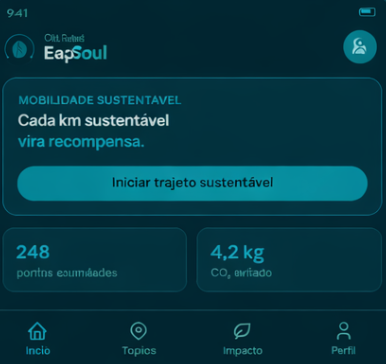
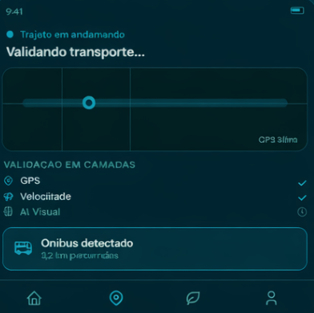
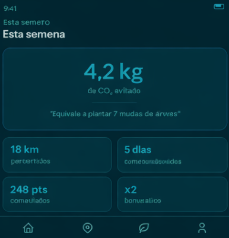
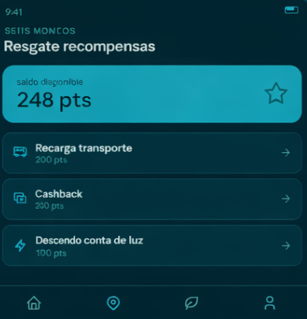

Problema
Quem usa transporte público reduz emissões, mas quase nunca recebe incentivo real por essa escolha sustentável.
Quem usa transporte público reduz emissões, mas quase nunca recebe incentivo real por essa escolha sustentável.
A EcoSoul valida o trajeto pelo celular, calcula o impacto ambiental e transforma viagens em pontos.
O usuário acompanha CO₂ evitado, acumula eco points e troca por benefícios como cashback e recarga.

Essa página dá boas‑vindas ao usuário e apresenta o botão “Iniciar trajeto sustentável”. Logo abaixo, mostra os pontos acumulados e a quantidade de CO₂ evitada, incentivando o início de novas jornadas ecológicas..

Aqui o app acompanha em tempo real o trajeto em andamento. Ele valida o transporte por camadas — GPS, velocidade e IA visual — e identifica automaticamente o meio de transporte, exibindo a distância já percorrida.

Essa tela resume os resultados da semana: quantidade de CO₂ evitada, equivalência em árvores plantadas, quilômetros percorridos, dias consecutivos de uso sustentável e bônus ativo. É o espaço de conscientização e motivação.

Mostra o saldo de pontos disponíveis e as opções de resgate, como recarga de transporte, cashback e desconto na conta de luz. É onde o comportamento sustentável se transforma em recompensas práticas para o usuário.